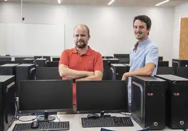
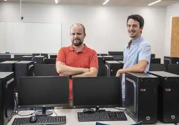

CONÓCENOS
brEn Codenotch tenemos muy clara nuestra misión: mejorar la vida de las personas a través de la
educación. Pero no lo hacemos de cualquier forma, trabajamos con programas disruptivos,
personalizados y de alta calidad que crean los perfiles profesionales que necesita la industria
tecnológica.
Nuestra metodología incorpora libertad, aventura, respeto, humanismo y creatividad a
nuestras formaciones. Valores que consideramos indispensables para que los futuros profesionales
puedan trabajar, expresarse y pensar libremente, aprendiendo de los errores, experimentando,
descubriendo y potenciando sus habilidades desde el respeto a sí mismos, a los demás y al
entorno. Creemos firmemente que la diversidad es un factor fundamental para que una industria
alcance su madurez y, por eso, promulgamos y favorecemos la igualdad de derechos y
oportunidades.
Queremos ser parte del progreso y del motor de cambio de la industria tecnológica, y lo
estamos consiguiendo a través de la transformación de cada uno de nuestros alumnos en
profesionales preparados y capaces.
«Un maestro es una brújula que
activa los imanes de la curiosidad, el conocimiento y la
sabiduría en los alumnos. »
Ever Garrison
 

Ingeniero informático.
Programación, Desarrollo web, Tecnología, Código informático,
Industria 4.0, Lenguajes de programación, Nómadas digitales, Formación, Educación, Bootcamp,
Bootcamp de programación y Desarrollo de software.
Me considero un apasionado de las nuevas
tecnologías y de la informática en particular. He dedicado mi vida profesional al desarrollo
software para múltiples empresas y a formar a personas en este ámbito para que logren sus
objetivos.
Una de las que mayor experiencia tienen en comenzar de cero. Con muchas ganas de enseñar lo
que ella misma aprendió haciendo el Bootcamp aquí mismo.
Especializada en Javascript, CSS, HTML, y muchas cosas más.
Además, será tu primer contacto
en Codenotch, ya que se encarga de las becas y proporcionarte informacion sobre los cursos.
Trabajando desde el 2009 como desarrolladores web, hemos trabajado con muchas plataformas y
tecnologías, además de ser profesores en universidades así como en cursos independientes,
tenemos la capacidad de enseñar y darnos a entender de manera rápida y sencilla, con más de 400
estudiantes satisfechos a lo largo de los años.